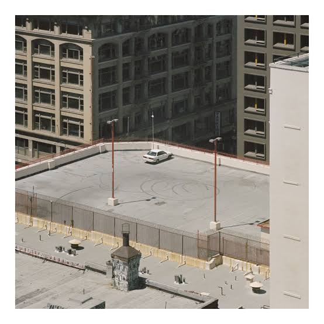

            <h2>Arctic Monkeys &quot;The Car&quot;</h2>
            
            <p>Cena: 59.99 zł</p>
            <p>
                7. album studyjny Arctic Monkeys wydany w 2022r<br>
                Track list: 
                <ol type="1">
                    <li>There'd Better Be A Mirrorball</li>
                    <li>I Ain't Quite Where I Think I Am</li>
                    <li>Sculptures Of Anything Goes</li>
                    <li>Jet Skis On The Moat</li>
                    <li>Body Paint</li>
                    <li>The Car</li>
                    <li>Big Ideas</li>
                    <li>Hello You</li>
                    <li>Mr Schwartz</li>
                    <li>Perfect Sense</li>
                </ol>
                Album nowy, nieużywany w orginalnym pakowaniu<br>
                <a href="kontakt.html">Zapytaj o produkt</a>
            <table>
                <caption><strong>Wykonawcy zespołu</strong></caption>
                <thead>
                    <tr><th scope="col">Instrument</th><th scope="col">Wykonane</th></tr>
                </thead>
                <tbody>
                    <tr><td><strong>Wokal</strong></td><td>Alex Turner</td></tr>
                    <tr><td><strong>Gitara</strong></td><td>Alex Turner, Jamie Cook</td></tr>
                    <tr><td><strong>Perkusja</strong></td><td>Matt Helders</td></tr>
                    <tr><td><strong>Bass</strong></td><td>Nick O'Malley</td></tr>
                </tbody>
            </table>
